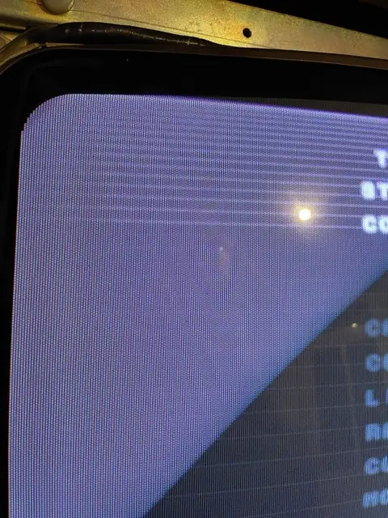
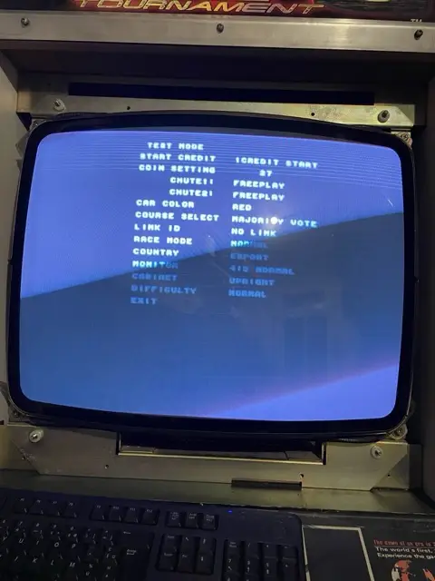
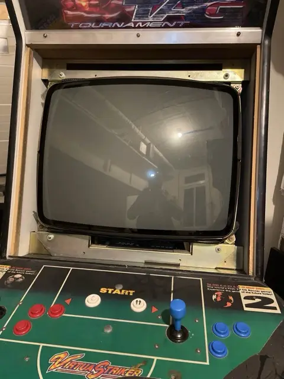
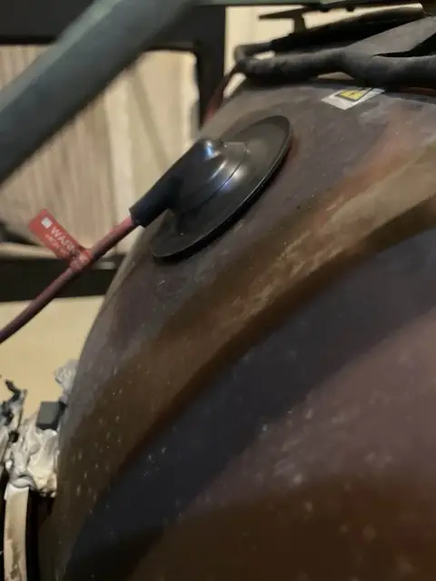

Restauration d'une borne mythique : SEGA Virtua Fighter 2. Icône des salles d'arcade des années 90, la borne Virtua Fighter 2 de SEGA renaît grâce au savoir-faire des techniciens de West Coast Arcades. Entièrement démontée, nettoyée et restaurée pièce par pièce, la borne retrouve son éclat d'origine : électronique révisée, écran calibré, commandes remises à neuf, et structure revue dans le respect du design SEGA d'époque.
Ce travail minutieux permet à cette légende du jeu de combat en 3D de reprendre vie, prête à accueillir de nouveaux challengers ! Comme toutes nos bornes, elle sera disponible à la location pour vos événements, salons ou espaces ludiques.
Louer cette borne


